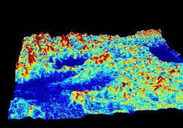
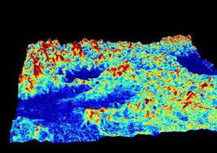

1. Introduction
In recent years, there has been a
heightened interest in monitoring
inland water quality, as rapid changes in human activity (such as
fertilizer leaching, etc...) have been linked to rising eutrophication
levels and increased silting (Dearing et al. 2005; Zhang et al.,2010).
Decision makers have also noted the importance of monitoring networks,
and water monitoring networks are starting to be deployed by
governments, their growth occurring in parallel to legislation on water
quality (Water Framework Directive, 2000/60/EC, Groundwater Directive
2006/118/EC, European Union Water Initiative (EUWI)). While these
networks are a positive development, they are not ubiquitous, limited
both in space and in time. Earth Observation (EO) data in the optical
domain has proven useful (e.g. (Carpenter 1983)) in monitoring water
quality, as surface reflectance in the visible part of the spectrum
varies as a function of water composition (Quibel 1991, Dekker et al.
1992, Chong et al 2014). In principle, EO data has the ability to
frequently monitor (limited by clouds and satellite revisit periods)
inland waters even in situations where no in situ observational
networks are in place. Moreover, since sensors such as Landsat have
been in operation for over three decades, it opens the possibility of
assessing long term dynamics in water composition.
A number of complications need to be addressed in order to use EO data
effectively
to monitor lakes, however. For one, data acquisition is contingent on
orbital selection, as well as cloudiness. In regions where clouds are
prevalent, our ability to monitor lakes is thus severely reduced.
Additionally, the sensors capture information on the state of the water
surface, but are also affected by the optical properties of the
atmosphere, principally by scattering and absorption of radiation by
gases and particles. Additional techniques are therefore required to
compensate this important contribution. Atmospheric correction process
converts top-of-atmosphere (TOA) radiance signal into water leaving
reflectance after removal of these atmospheric effects.
In this contribution, we address the problem of atmospheric correction,
trying
to provide a practical and simple general approach. The method is
adapted from Wang et al (2007), and accounts for the effects of
Rayleigh scattering, atmospheric ozone and aerosols. We compare the
results with in situ measurements, as well as with results obtained by
treating the original data with the Landsat Ecosystem Disturbance
Adaptive Processing System (LEDAPS). We show that estimating the
contribution of aerosols is critical to fully